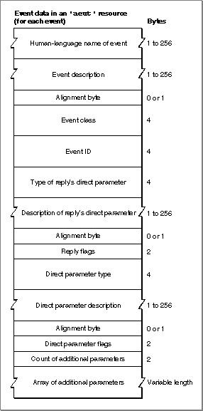
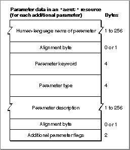

Event Data
Each item in the array of events for a suite specified in an'aeut'or'aete'resource includes information about the event, the reply, and the direct parameter, and an array that specifies the additional parameters for the event. Figure 8-4 shows the format of this event data.Figure 8-4 Structure of event data in an
'aeut'or'aete'resource
The data for each event consists of the following items:
- The human-language name of the event. This is a Pascal string that can include any characters, including uppercase and lowercase letters and spaces. If the
'aete'resource specifies the name as an empty string, the scripting component looks up, in its'aeut'resource, the event name and other event data that correspond to the specified event class and event ID. This strategy facilitates localization, since the human-language name is provided by the'aeut'resource. In this case the scripting component will use the standard data from the'aeut'resource for the event plus the data provided by the'aete'resource for any additional parameters.If the
'aete'resource specifies a name other than the name provided by the'aeut'resource for the same event class and event ID, the scripting component uses the new name with the same suite data from the'aeut'resource. You should specify an empty string for the name of any standard event that your application lists explicitly in its'aete'resource.- A human-language description of the event. This is a Pascal string that can include any characters. When the resource description is compiled, the resource compiler pads the string and aligns the next field on a word boundary.
- The four-character event class for the event. If the
'aete'resource specifies a standard event name and an event class other than the event class for the equivalent standard event, the scripting component uses the new event class with the standard event data for the specified name. You should specify the standard event class for any standard event that your application lists explicitly in its'aete'resource.- The four-character event ID for the event. If the
'aete'resource specifies a standard event name and an event ID other than the event ID for the equivalent standard event, the scripting component uses the new event ID with the standard event data for the specified name. You should specify the standard event ID for any standard event that your application lists explicitly in its'aete'resource.- A four-character descriptor type for the direct parameter of the reply. If the event never needs a reply, or if the reply does not include a direct parameter, this value must be
typeNull. Otherwise, the meaning of this field varies according to the values of two of the flags that follow. One flag specifies whether the parameter is a list (singleItemorlistOfItems), and the other specifies whether the values for the parameter are enumerated (enumeratedornotEnumerated):
- If the parameter is not a list and its values are not enumerated, this value is the descriptor type for the direct parameter.
- If the parameter is a list and its values are not enumerated, this value is the descriptor type for each of the items in the list. (If not all the items in the list are of the same descriptor type, the flag specifying whether the value is a list must have the value
singleItem, and the value of this field must betypeAEList.)- If the parameter is not a list and its values are enumerated, this value is the four-character code for the enumeration defined in either the
'aete'or'aeut'resource that contains the allowable values for the parameter. (If the values are enumerated but the enumeration is not defined in either the'aete'or'aeut'resource, the flag specifying whether the parameter's values are enumerated must have the valuenotEnumerated, and the value of this field must betypeEnumerated.)- If the parameter is a list and its values are enumerated, this value is the four-character code for the enumeration defined in the same resource that contains the allowable values for all of the items in the list. All items in the list must have one of these enumerated values.
- A human-language description of the direct parameter of the reply. This is a Pascal string that can include any characters. Although the reply may include other parameters, only the direct parameter of the reply is described here. When the resource description is compiled, the resource compiler aligns the string on a word boundary.
- Flags that specify the following as Boolean values:
- Whether the direct parameter of the reply is required (
replyRequired) or optional (replyOptional).- Whether the direct parameter of the reply is a single item (
singleItem) or a list of items (listOfItems). (See the earlier description of the reply event's four-character descriptor type for information about how this value changes the meaning of the reply type.)- Whether named constants, called enumerators, are specified as the only valid values for the direct parameter of the reply (
enumeratedornotEnumerated). (See the earlier description of the four-character descriptor type for the reply event's direct parameter for information about how this value changes the meaning of the direct parameter type.) For information about specifying enumerators, see "Enumeration and Enumerator Data" on page 8-43.- Following 5 bits are reserved for future use. The values of these bits must be set to
reserved.- Following 7 bits are reserved for future use as dialect-specific flags. The values of these bits must be set to
reserved.- Whether the event is a nonverb event (
nonVerbEvent). This bit is used by dialects such as the AppleScript Japanese dialect that make this distinction. For all other dialects, set the value of this bit toreserved.- A four-character descriptor type for the direct parameter of the event. If the event never has a direct parameter, this value must be
typeNull. Otherwise, the meaning of this field varies according to the values of two of the flags that follow. One flag specifies whether the parameter is a list (singleItemorlistOfItems), and the other specifies whether the values for the parameter are enumerated (enumeratedornotEnumerated):
- If the parameter is not a list and its values are not enumerated, this value is the descriptor type for the direct parameter.
- If the parameter is a list and its values are not enumerated, this value is the descriptor type for each of the items in the list. (If not all the items in the list are of the same descriptor type, the flag specifying whether the value is a list must have the value
singleItem, and the value of this field must betypeAEList.)- If the parameter is not a list and its values are enumerated, this value is the four-character code for the enumeration defined in either the
'aete'or'aeut'resource that contains the allowable values for the parameter. (If the values are enumerated but the enumeration is not defined in either the'aete'or'aeut'resource, the flag specifying whether the parameter's values are enumerated must have the valuenotEnumerated, and the value of this field must betypeEnumerated.)- If the parameter is a list and its values are enumerated, this value is the four-character code for the enumeration defined in the same resource that contains the allowable values for all of the items in the list. The values of the items in the list must all be one of these enumerated values.
- A human-language description of the direct parameter. This is a Pascal string that can include any characters. When the resource description is compiled, the resource compiler pads the string and aligns the next field on a word boundary.
- Flags that specify the following as Boolean values:
- Whether the direct parameter of the event is required (
directParamRequired) or optional (directParamOptional).- Whether the direct parameter of the event is a single item (
singleItem) or a list of items (listOfItems). (See the earlier description of the direct parameter's four-character descriptor type for information about how this value changes the meaning of the direct parameter type.)- Whether named constants, called enumerators, are specified as the only valid values for the direct parameter (
enumeratedornotEnumerated). (See the earlier description of the direct parameter's four-character descriptor type for information about how this value changes the meaning of the direct parameter type.) For information about specifying enumerators, see "Enumeration and Enumerator Data" on page 8-43.- Whether receiving this event changes (
changesState) or doesn't change (doesntChangeState) the internal state of the receiving application. Events that only get information do not change the state of the application, whereas events such as Cut and Move do.- Following 4 bits are reserved for future use. The values of these bits must be set to
reserved.- Following 8 bits are reserved for future use as dialect-specific flags. The values of these bits must be set to
reserved.- A count of the additional parameters described for this event and an array of additional parameter definitions.
Additional Parameter Data
Each item in the array of additional parameters for an event specified in an'aeut'resource includes information about a single additional parameter. Figure 8-5 shows the format of additional parameter data in an'aeut'or'aete'resource.Figure 8-5 Structure of additional parameter data in an
'aeut'or'aete'resource
The data for each additional parameter consists of the following items:
"Extending the Standard Suites," which begins on page 8-21, includes sample Rez input for an
- The human-language name of the parameter. This is a Pascal string that can include any characters, including uppercase and lowercase letters and spaces. When the resource description is compiled, the resource compiler pads the string and aligns the next field on a word boundary.
If the
'aete'resource specifies the name of an additional parameter as an empty string, the scripting component looks up, in its'aeut'resource, the parameter name and other parameter data that correspond to the specified parameter keyword. If the'aete'resource specifies a name other than the name provided by the'aeut'resource for the same parameter keyword, the scripting component uses the new name with the same parameter data from the'aeut'resource. You should specify an empty string for the name of any standard additional parameter that you list explicitly in an'aete'resource.- The four-character keyword for the parameter. If the
'aete'resource specifies a standard parameter name and a parameter keyword other than the keyword for the equivalent standard parameter, the scripting component uses the new parameter keyword with the standard parameter data for the specified name. You should specify the standard parameter keyword for any standard additional parameter that you list explicitly in an'aete'resource.- A four-character descriptor type for the parameter. The meaning of this field varies according to the values of two of the flags that follow. One flag specifies whether the parameter is a list (
singleItemorlistOfItems), and the other specifies whether the values for the parameter are enumerated (enumeratedornotEnumerated):
- If the parameter is not a list and its values are not enumerated, this value is the descriptor type for the direct parameter.
- If the parameter is a list and its values are not enumerated, this value is the descriptor type for each of the items in the list. (If not all the items in the list are of the same descriptor type, the flag specifying whether the value is a list must have the value
singleItem, and the value of this field must betypeAEList.)- If the parameter is not a list and its values are enumerated, this value is the four-character code for the enumeration defined in either the
'aete'or'aeut'resource that contains the allowable values for the parameter. (If the values are enumerated but the enumeration is not defined in either the'aete'or'aeut'resource, the flag specifying whether the parameter's values are enumerated must have the valuenotEnumerated, and the value of this field must betypeEnumerated.)- If the parameter is a list and its values are enumerated, this value is the four-character code for the enumeration defined in the same resource that contains the allowable values for all of the items in the list. The values of the items in the list must all be one of these enumerated values.
- A human-language description of the parameter. This is a Pascal string that can include any characters. When the resource description is compiled, the resource compiler pads the string and aligns the next field on a word boundary.
- Flags that specify the following as Boolean values:
- Whether the parameter is required (
required) or optional (optional).- Whether the parameter is a single item (
singleItem) or a list of items (listOfItems). (See the earlier description of the additional parameter's four-character descriptor type for information about how this value changes the meaning of the parameter type.)- Whether named constants, called enumerators, are specified as the only valid values for the parameter (
enumeratedornotEnumerated). (See the earlier description of the parameter's four-character descriptor type for information about how this value changes the meaning of the parameter type.) For information about specifying enumerators, see "Enumeration and Enumerator Data" on page 8-43.- Whether the parameter is the event's only unnamed parameter (
isUnNamed) or is named (isNamed). This bit is used by dialects such as AppleScript Japanese that make this distinction. For all other dialects, set the value of this bit toreserved.- Following 4 bits are reserved for future use. The values of these bits must be set to
reserved.- Following 8 bits are reserved for future use as dialect-specific flags. The values of these bits must be set to
reserved.'aete'resource that adds new parameters to a standard Apple event.